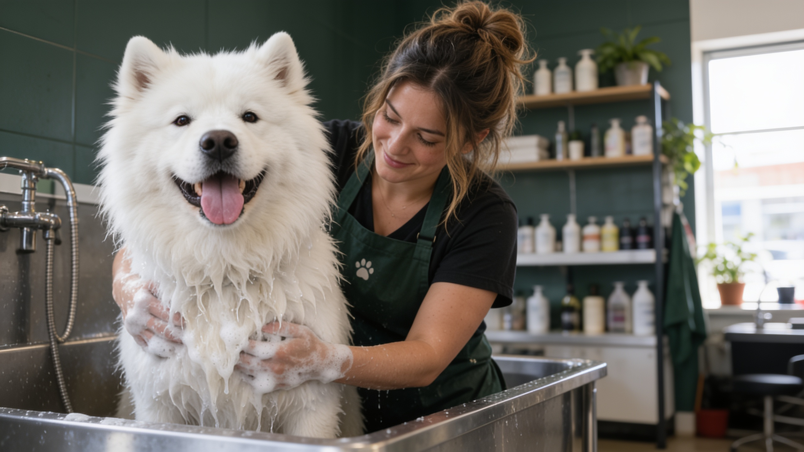
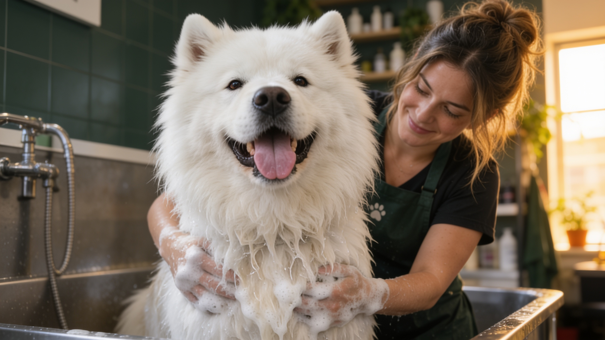
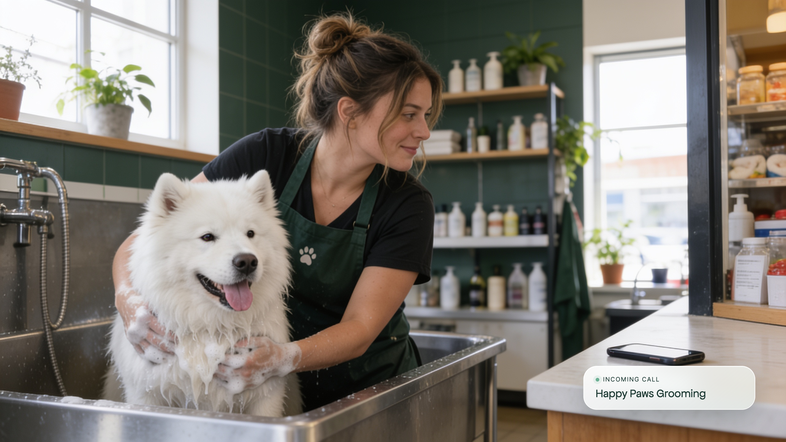
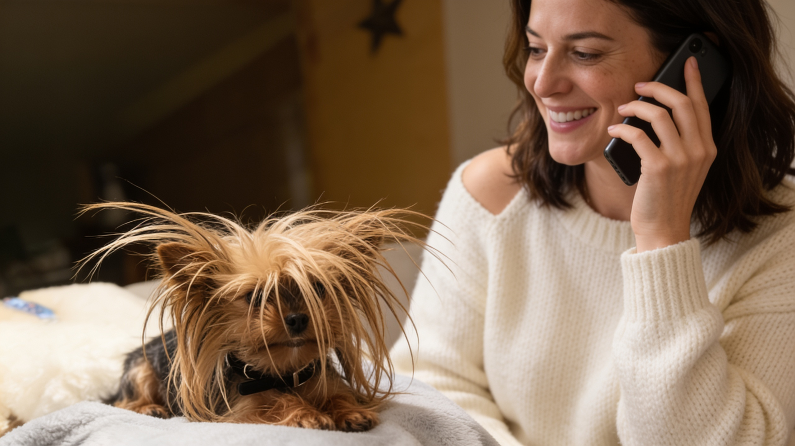
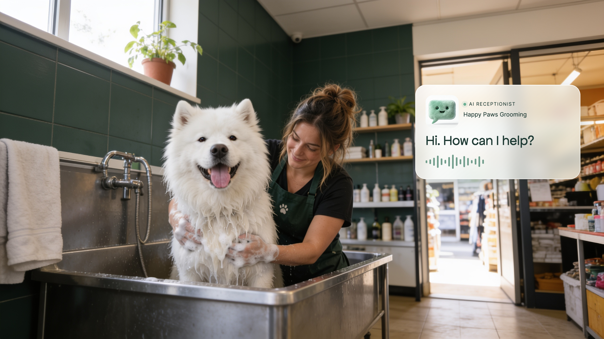
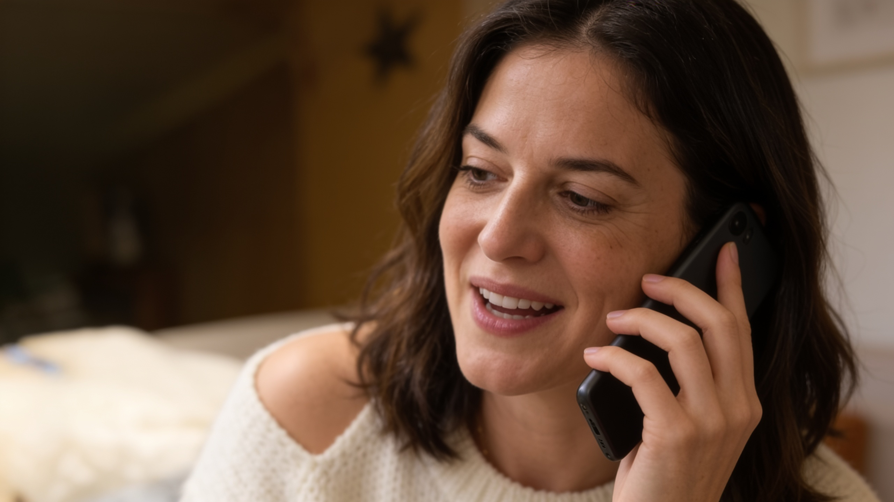
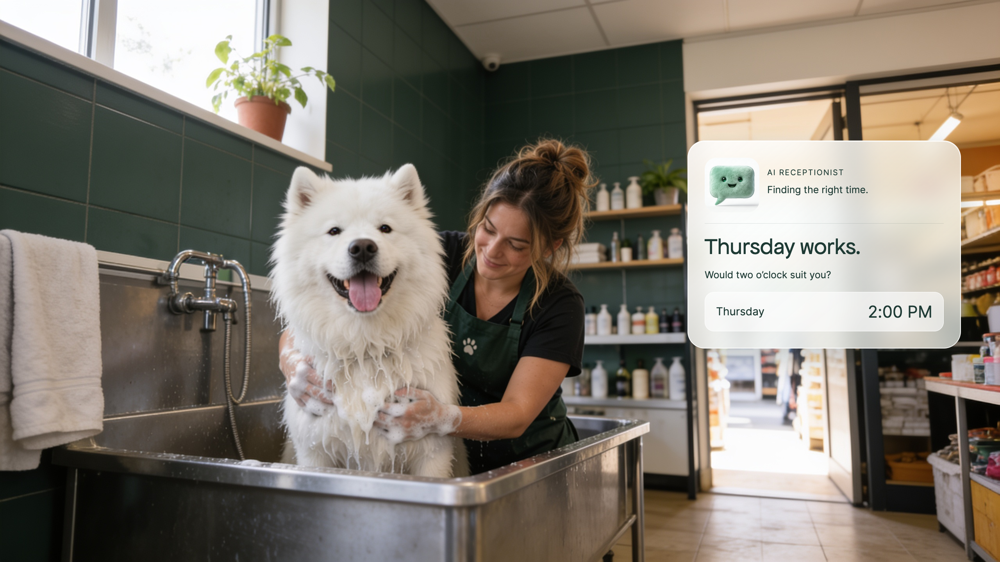
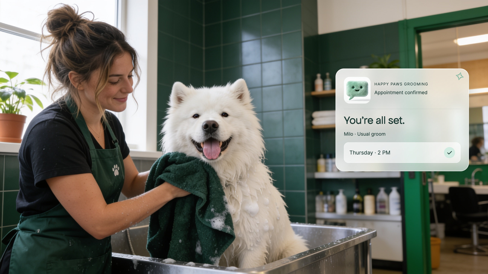
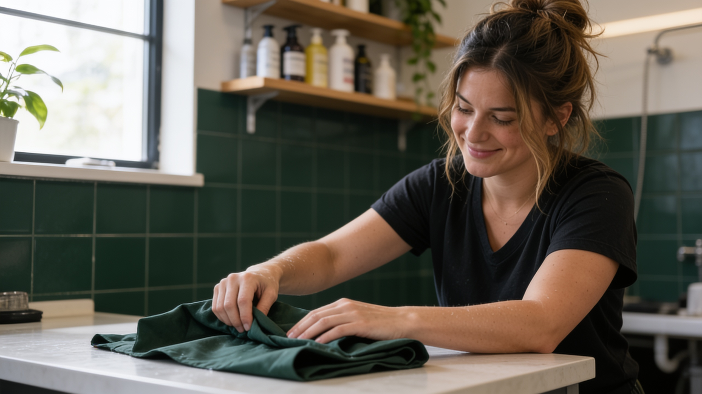
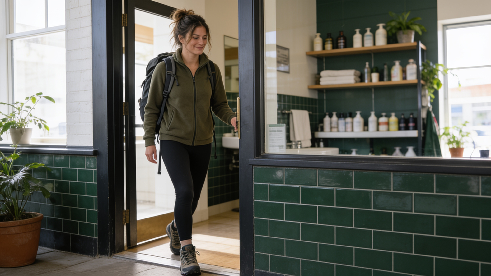

01 · Meet the customer in her hands

02 · Both hands. One very good dog.

03 · She hears it. She can’t pick up.

04 · Milo could use a little help

05 · A reassuring answer

06 · A specific request

07 · An answer that fits
08 · The customer chooses

09 · Both customers taken care of

10 · The work is finished

11 · Time for her plans
12 · A life beyond the next ring